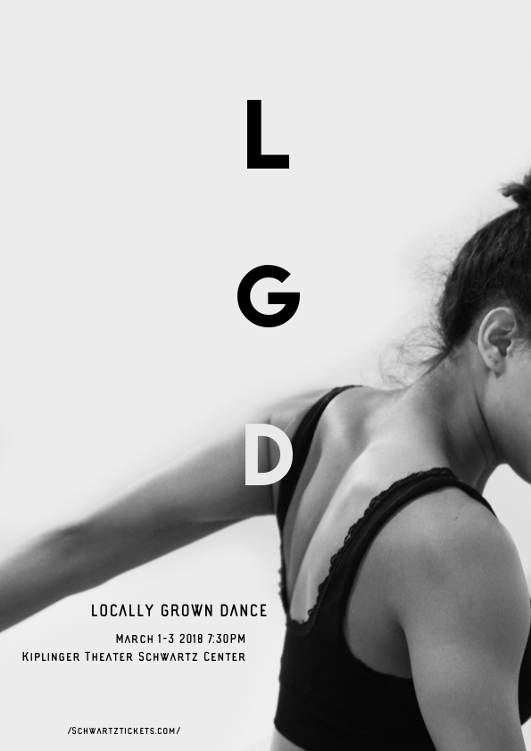
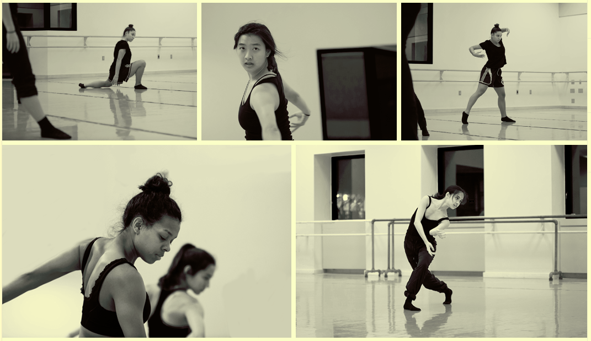
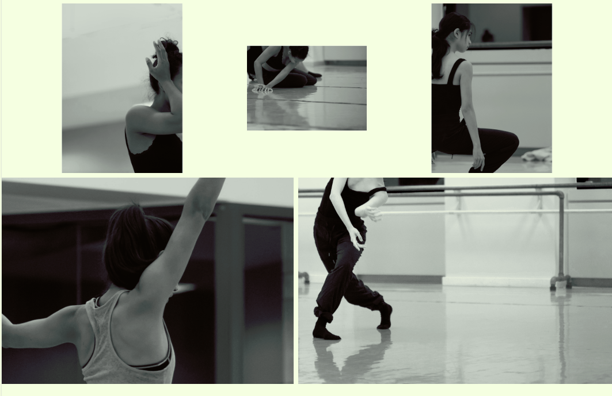
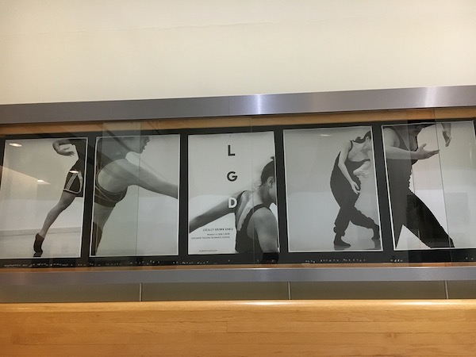
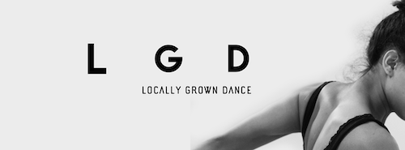

Locally Grown Dance
Locally Grown Dance is an annual performance by the Performing and Media Arts Department at Cornell University. Its something into which choreographers and student performers pour their hard work and creative energy, amidst academic and work obligations. I've had the honor of performing in the show for the past three years and my choreographers and fellow performers have never failed to inspire and surprise me with their artistry.
Yet every year, the performers and those involved find the marketing put out by the department to be, simply sub-par, unreflective of the true artistry we embody in the choreographic and performance process. The marketing was so less-than-mediocre, that even the performers themselves felt embarrassed to share the material. For me, this was the absolute tipping point: as performers we work so hard to put together this show, and we should feel excited, not obligated, to share our work with our peers.
This year, I stepped in and designed the marketing materials for the show. As a performer in the show and an aspiring product designer, I was up to the challenge to design an aesthetic that captured the essence of the dance concert and resonated with the performers and choreographers. And since this material was to market the show, I aimed design something eye-catching, while being truthful to the aesthetic of the piece.
I collaborated on this project with a good friend and amazing dance photographer, Aubrey Akers. Special thanks to one of my choreographers, Nic Ceynowa, for logistic and administrative help, and feedback.
Poster Design for Locally Grown Dance
I unfortunately had worked within a rather narrow time frame: I had four days to design the main poster. Therefore, I could not do as much exploration and brainstorming as I would have liked and many design decisions were made based on intuition and quick feedback from my collaborative partners.
In addition to the poster design, I created a series of photos to post in an instagram feed that would be posted everyday over the course of the two weeks leading up to the show. For each photo, I created at least two versions: one with the dancer's face cropped and the other without. In doing so, I intended to capture the tension between the audience and the performer, the innate barrier between the stage and the house.
Sample of photos for Instagram Campaign (editing by Alexis Vinzons, photography by Aubrey Akers, https://www.aubreyakersphoto.com/ )
The lobby of the Schwartz Center of the Performing Arts features a glass display, another marketing channel. I printed a few of the images I had edited for the Instagram feed, refining the images so that they complemented the quality of the original poster, paying particular attention to the color contrast of the subject and background and the shadows on the body of the dancer. The idea was inspired by my original intention to create a poster series from the photographs, which I could not achieve given the time constraint.
glass lobby display
Lastly, I created a Facebook coverphoto which I intended to circulate among the dancers and choreographers.
Facebook CoverPhoto
I approached this project with the intention to prove that the students involved in the performances put on by the PMA Department at Cornell are both capable and eager to take part in the marketing of their own shows. Many of the students involved in the department are not performance majors and do not plan to pursue careers in the arts; thus their performance involvement is driven by their sincere passion for the art. This devotion; however, has previously failed to be communicated through the marketing put on by the department.
Through this project, I proved that the performers themselves are passionate enough and have the capacity to create the marketing materials for their own shows. This involvement in the marketing process instills a sense of pride for their artistic work, which is something that is certainly needed but was previously lacking. The performers themselves also have a sincere understanding of the essence of the performance that is to be communicated through marketing. I hope in future performances, students will be inspired and eager to communicate their performance art into visual marketing, for the pride and success of their own shows.